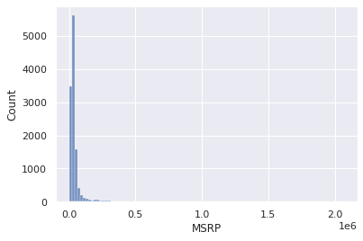
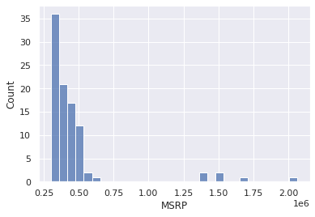
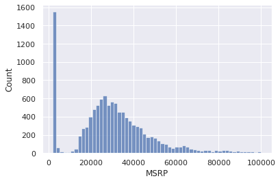
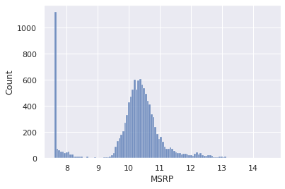
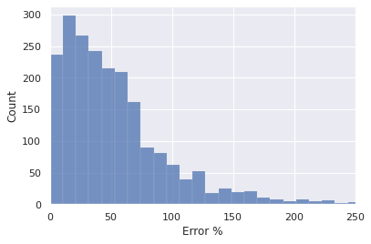

Estimation du prix de voitures d’occasion#
Nous disposons d’un ensemble de données décrivant des voitures d’occasion, telles que marque, modèle, age, ainsi que leur prix de vente. A partir de données concernant un véhicule, nous souhaiterions pouvoir en prédire le prix de vente. Il s’agit d’un exemple de régression (apprentissage supervisé).
Compréhension du métier#
On essaye de déterminer si une approche basée sur le Machine Learning est appropriée
Quel est ce problème ?
Comment ce problème est-il traité aujourd’hui ?
En quoi la solution actuelle doit-elle être améliorée ?
Est-ce qu’une approche « classique » permettrait de le résoudre ?
Quel est l’objectif à atteindre par la soultion ?
Comment mesurer la valeur métier de la solution ?
Compréhension des données#
De quelles données peut-on disposer?
Les données sont-elles en quantité suffisante ?
Les données sont-elles de qualité suffisante ?
Peut-on trouver d’autres données ?
Peut-on améliorer la qualité des données existantes ?
Doit-on réviser les objectifs par rapport aux données dont on dispose ?
Le Dataset utilisé provient de Kaggle et est accessible depuis https://www.kaggle.com/CooperUnion/cardataset
import pandas as pd
import numpy as np
import seaborn as sns
from matplotlib import pyplot as plt
sns.set()
%matplotlib inline
car_prices = pd.read_csv("datasets/car-prices.csv")
car_prices.head(5)
| Make | Model | Year | Engine Fuel Type | Engine HP | Engine Cylinders | Transmission Type | Driven_Wheels | Number of Doors | Market Category | Vehicle Size | Vehicle Style | highway MPG | city mpg | Popularity | MSRP | |
|---|---|---|---|---|---|---|---|---|---|---|---|---|---|---|---|---|
| 0 | BMW | 1 Series M | 2011 | premium unleaded (required) | 335.0 | 6.0 | MANUAL | rear wheel drive | 2.0 | Factory Tuner,Luxury,High-Performance | Compact | Coupe | 26 | 19 | 3916 | 46135 |
| 1 | BMW | 1 Series | 2011 | premium unleaded (required) | 300.0 | 6.0 | MANUAL | rear wheel drive | 2.0 | Luxury,Performance | Compact | Convertible | 28 | 19 | 3916 | 40650 |
| 2 | BMW | 1 Series | 2011 | premium unleaded (required) | 300.0 | 6.0 | MANUAL | rear wheel drive | 2.0 | Luxury,High-Performance | Compact | Coupe | 28 | 20 | 3916 | 36350 |
| 3 | BMW | 1 Series | 2011 | premium unleaded (required) | 230.0 | 6.0 | MANUAL | rear wheel drive | 2.0 | Luxury,Performance | Compact | Coupe | 28 | 18 | 3916 | 29450 |
| 4 | BMW | 1 Series | 2011 | premium unleaded (required) | 230.0 | 6.0 | MANUAL | rear wheel drive | 2.0 | Luxury | Compact | Convertible | 28 | 18 | 3916 | 34500 |
Les données sont-elles en quantité suffisante ?#
car_prices.shape
(11914, 16)
Les données sont-elles de qualitité suffisante ?#
Types de données et valeurs nulles#
car_prices.info()
<class 'pandas.core.frame.DataFrame'>
RangeIndex: 11914 entries, 0 to 11913
Data columns (total 16 columns):
# Column Non-Null Count Dtype
--- ------ -------------- -----
0 Make 11914 non-null object
1 Model 11914 non-null object
2 Year 11914 non-null int64
3 Engine Fuel Type 11911 non-null object
4 Engine HP 11845 non-null float64
5 Engine Cylinders 11884 non-null float64
6 Transmission Type 11914 non-null object
7 Driven_Wheels 11914 non-null object
8 Number of Doors 11908 non-null float64
9 Market Category 8172 non-null object
10 Vehicle Size 11914 non-null object
11 Vehicle Style 11914 non-null object
12 highway MPG 11914 non-null int64
13 city mpg 11914 non-null int64
14 Popularity 11914 non-null int64
15 MSRP 11914 non-null int64
dtypes: float64(3), int64(5), object(8)
memory usage: 1.5+ MB
Statistiques#
car_prices.describe().round(2)
| Year | Engine HP | Engine Cylinders | Number of Doors | highway MPG | city mpg | Popularity | MSRP | |
|---|---|---|---|---|---|---|---|---|
| count | 11914.00 | 11845.00 | 11884.00 | 11908.00 | 11914.00 | 11914.00 | 11914.00 | 11914.00 |
| mean | 2010.38 | 249.39 | 5.63 | 3.44 | 26.64 | 19.73 | 1554.91 | 40594.74 |
| std | 7.58 | 109.19 | 1.78 | 0.88 | 8.86 | 8.99 | 1441.86 | 60109.10 |
| min | 1990.00 | 55.00 | 0.00 | 2.00 | 12.00 | 7.00 | 2.00 | 2000.00 |
| 25% | 2007.00 | 170.00 | 4.00 | 2.00 | 22.00 | 16.00 | 549.00 | 21000.00 |
| 50% | 2015.00 | 227.00 | 6.00 | 4.00 | 26.00 | 18.00 | 1385.00 | 29995.00 |
| 75% | 2016.00 | 300.00 | 6.00 | 4.00 | 30.00 | 22.00 | 2009.00 | 42231.25 |
| max | 2017.00 | 1001.00 | 16.00 | 4.00 | 354.00 | 137.00 | 5657.00 | 2065902.00 |
Distribution des valeurs de la variable à prédire#
sns.histplot(car_prices["MSRP"], bins=100);

Les valeurs semblent très concentrées dans les prix les plus bas.
Observons d’abord en détail la partie haute (prix élevés).
sns.histplot(car_prices.MSRP[car_prices.MSRP >= 300_000])
<AxesSubplot:xlabel='MSRP', ylabel='Count'>

# De quelles marques s'agit-il ?
car_prices[car_prices["MSRP"] > 300_000]["Make"].unique()
array(['Maybach', 'Ferrari', 'Lamborghini', 'Bentley', 'Porsche',
'Rolls-Royce', 'Lexus', 'Mercedes-Benz', 'Aston Martin', 'Bugatti'],
dtype=object)
Puis les voitures plus économiques
sns.histplot(car_prices.MSRP[car_prices.MSRP < 100_000])
<AxesSubplot:xlabel='MSRP', ylabel='Count'>

Etant donné la forme de la courbe (allongée à droite), on peut envisager une conversion en log de la target
sns.histplot(np.log1p(car_prices.MSRP))
<AxesSubplot:xlabel='MSRP', ylabel='Count'>

Préparation des données#
Nettoyage des données
Transformation des données
Selection des données
Sélection des variables#
La plupart des algorithmes de Machine Learning ne savent traiter que les données numériques. Dans un premier temps, pour simplifier, nous ne conserverons donc que celles-ci.
Traitement des données nulles#
La variable Engine HP#
On remplacera les valeurs manquantes par la médiane
La variable Engine Cylinders#
On remplacera les valeurs manquantes et nulles par la médiane
La variable Number of Doors#
Elle apparaît comme numérique, mais elle est en réalité catégorielle.
En pratique#
num_cols = [
'Year', 'Engine HP', 'Engine Cylinders',
'highway MPG', 'city mpg', 'Popularity'
]
# Paramétrage du processus de modélisation
from xgboost import XGBRegressor
from sklearn.linear_model import LinearRegression, Ridge, Lasso
process_params = {
"logarithm_target": False,
"model": LinearRegression()
}
from sklearn.impute import SimpleImputer
def process_num_values(df):
df = df[num_cols]
df = df.replace(0, np.nan)
X = SimpleImputer(strategy="median").fit_transform(df)
y = car_prices["MSRP"]
return X, y
X, y = process_num_values(car_prices)
X.shape, y.shape
((11914, 6), (11914,))
Convsersion log si nécéssaire
if process_params["logarithm_target"]:
y = np.log1p(y)
Préparation des jeux d’apprentissage et de test#
from sklearn.model_selection import train_test_split
X_train, X_test, y_train, y_test = train_test_split(X, y, test_size=0.2, random_state=10)
Modélisation#
Choisir l’algorithme de Machine Learning à utiliser
Choisir une métrique
model = process_params["model"]
model.fit(X_train, y_train)
LinearRegression()
y_pred_train = model.predict(X_train)
y_pred = model.predict(X_test)
# Conversion inverse (exponentielle)
if process_params["logarithm_target"]:
y_train = car_prices["MSRP"][y_train.index]
y_test = car_prices["MSRP"][y_test.index]
# On limite le prix max pour éviter les overflows
max_log_y = y.max()
y_pred[y_pred > max_log_y] = max_log_y
y_pred_train[y_pred_train > max_log_y] = max_log_y
y_pred = np.expm1(y_pred)
y_pred_train = np.expm1(y_pred_train)
from sklearn.metrics import mean_squared_error
def root_mean_squared_error(y, y_pred):
return np.sqrt(mean_squared_error(y, y_pred))
Etude des erreurs#
rmse_train = root_mean_squared_error(y_train, y_pred_train)
rmse_test = root_mean_squared_error(y_test, y_pred)
rmse_train, rmse_test
(42801.3395077533, 49878.99690099804)
# erreur en pourcentage du prix
err_pct = np.abs(y_test - y_pred) / y_test
sns.histplot(err_pct * 100)
plt.xlabel("Error %")
plt.xlim(0, 250)
(0.0, 250.0)

On essaye de comprendre quel est le profil des voitures qui ont une erreur élevée
high_error_cars = car_prices.loc[err_pct[err_pct > 0.2].index]
high_error_cars.shape
(1884, 16)
high_error_cars.head()
| Make | Model | Year | Engine Fuel Type | Engine HP | Engine Cylinders | Transmission Type | Driven_Wheels | Number of Doors | Market Category | Vehicle Size | Vehicle Style | highway MPG | city mpg | Popularity | MSRP | |
|---|---|---|---|---|---|---|---|---|---|---|---|---|---|---|---|---|
| 5248 | Hyundai | Genesis Coupe | 2014 | premium unleaded (recommended) | 274.0 | 4.0 | MANUAL | rear wheel drive | 2.0 | Performance | Midsize | Coupe | 27 | 19 | 1439 | 27200 |
| 610 | Ferrari | 575M | 2004 | premium unleaded (required) | 515.0 | 12.0 | MANUAL | rear wheel drive | 2.0 | Exotic,High-Performance | Compact | Coupe | 15 | 9 | 2774 | 217890 |
| 4673 | Ford | Fiesta | 2015 | regular unleaded | 120.0 | 4.0 | MANUAL | front wheel drive | 4.0 | NaN | Compact | Sedan | 36 | 28 | 5657 | 14455 |
| 8480 | Suzuki | Reno | 2007 | regular unleaded | 127.0 | 4.0 | MANUAL | front wheel drive | 4.0 | Hatchback | Compact | 4dr Hatchback | 28 | 20 | 481 | 13599 |
| 4792 | Ford | Focus | 2017 | flex-fuel (unleaded/E85) | 160.0 | 4.0 | AUTOMATED_MANUAL | front wheel drive | 4.0 | Hatchback,Flex Fuel | Compact | 4dr Hatchback | 40 | 27 | 5657 | 21675 |
high_error_cars.describe().round(2)
| Year | Engine HP | Engine Cylinders | Number of Doors | highway MPG | city mpg | Popularity | MSRP | |
|---|---|---|---|---|---|---|---|---|
| count | 1884.00 | 1876.00 | 1880.00 | 1882.00 | 1884.00 | 1884.00 | 1884.00 | 1884.00 |
| mean | 2009.53 | 241.97 | 5.63 | 3.41 | 26.72 | 19.93 | 1539.61 | 38383.80 |
| std | 8.22 | 114.81 | 1.85 | 0.89 | 8.94 | 9.83 | 1388.51 | 72699.04 |
| min | 1990.00 | 63.00 | 0.00 | 2.00 | 12.00 | 8.00 | 2.00 | 2000.00 |
| 25% | 2004.00 | 160.00 | 4.00 | 2.00 | 22.00 | 15.00 | 549.00 | 18158.75 |
| 50% | 2014.00 | 208.00 | 6.00 | 4.00 | 26.00 | 18.00 | 1385.00 | 27522.00 |
| 75% | 2016.00 | 295.00 | 6.00 | 4.00 | 31.00 | 22.00 | 2009.00 | 39035.00 |
| max | 2017.00 | 1001.00 | 16.00 | 4.00 | 111.00 | 137.00 | 5657.00 | 1705769.00 |
car_prices.describe().round(2)
| Year | Engine HP | Engine Cylinders | Number of Doors | highway MPG | city mpg | Popularity | MSRP | |
|---|---|---|---|---|---|---|---|---|
| count | 11914.00 | 11845.00 | 11884.00 | 11908.00 | 11914.00 | 11914.00 | 11914.00 | 11914.00 |
| mean | 2010.38 | 249.39 | 5.63 | 3.44 | 26.64 | 19.73 | 1554.91 | 40594.74 |
| std | 7.58 | 109.19 | 1.78 | 0.88 | 8.86 | 8.99 | 1441.86 | 60109.10 |
| min | 1990.00 | 55.00 | 0.00 | 2.00 | 12.00 | 7.00 | 2.00 | 2000.00 |
| 25% | 2007.00 | 170.00 | 4.00 | 2.00 | 22.00 | 16.00 | 549.00 | 21000.00 |
| 50% | 2015.00 | 227.00 | 6.00 | 4.00 | 26.00 | 18.00 | 1385.00 | 29995.00 |
| 75% | 2016.00 | 300.00 | 6.00 | 4.00 | 30.00 | 22.00 | 2009.00 | 42231.25 |
| max | 2017.00 | 1001.00 | 16.00 | 4.00 | 354.00 | 137.00 | 5657.00 | 2065902.00 |
Evaluation#
On vérifie que le modèle répond bien au besoin
Vérifier que la métrique métier atteint les objectifs fixés lors de la phase de compréhension du métier.
Sinon, on itère en partant des pistes identifiées lors de l’itération courante